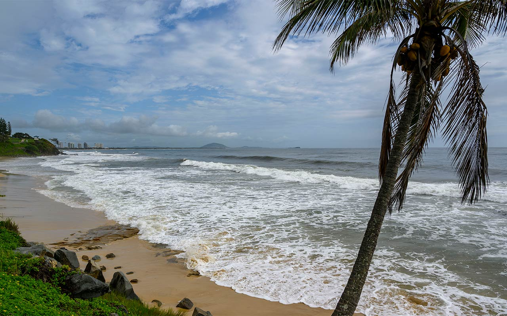

Mirissa Beach
With views of aquatic wildlife in its natural habitat, Mirissa attracts people from all over
the world come to Mirissa for both ecological purposes as well as for holidays.
Famous for:
- Mirissa is one of those beaches in Sri Lanka which is ideal for
swimming.
- West side of the beach is known for watersports, especially surfing,
and a small coral reef
- Spot dolphins and whales, if you visit in December, you may spot
turtles laying eggs too
- Hire a boat and go fishing with the locals near the coral reef.
- Enjoy a relaxing Ayurvedic massage in Ayurveda centers in Mirissa
- A River safari would definitely money well spent as you could see
nature at its best, well spread out paddy fields hovered by migratory
birds and water animals are definitely a treat to eyes.
Best time to visit:
December to March to see turtle hatching, or through August to October
Hotels
Beach Mirissa
SriMany
D Canal House
Weligama
beach
One of the best beach places in Sri Lanka is the Weligama beach on the southwest
coast of the country. It is touted to be Sri Lankas most beautiful beach. You can click
selfies here with your squad and your loved ones. Make sure to put those pictures up
on Instagram for everyone to see.
- Its the most ideal beach for surfing as there is no danger of sharks
- A perfect destination to enjoy diving and snorkeling as it is guarded by
shallow coral reef.
- Enjoy the most amazing views of stilt fishing
- Leper king statue-its a carved statue of an old king whose identity is
not yet known
- Weligama lace weaving factor is a must visit. Here you can see women
weaving lace which is also sold to a tourist. Also, the gem and jewelry
factory is a must visit.
Best time to visit:
October to March
Hotels
The Surfer Sri Lanka - Surf Camp
Lucky's Surf Camp
Luvi Lucas River Side
=======
Polhena beach
Polhena beach is indeed one of the most beautiful beaches in Sri Lanka which is both a
treat to the eyes as well as providing an excellent stop for some water sports. Its one of
the few beaches which are suitable for swimming. Since it is protected by the soft coral
reef, therefore, it is protected by strong waves. This is one of the best beaches in Sri
Lanka.
- Take a snorkeling tour and dive in the pristine waters
- Watch the turtles up close and personal through the turtle view
balcony terrace
- Witness the most beautiful untouched aquatic life along the 4 km long
coral reef
- Take the tour of this tranquil and scenic village and book a boat trip on
the Nilwala Ganga river where you get to spot crocodiles and beautiful
birds
- Enjoy some live acrobatics which is practiced by the locals on the
beach
Best time to visit:
March to October
Hotels
LakRaj Heritage
Kaminrich Cottage
Nil Diya Beach Resort
Dikwella beach

Dickwella is the home to some of the plush resorts where many newly wedded couples
often comes to celebrate their honeymoon. This is amongst the best beach places in
Sri Lanka and offers the most tranquil environment.
- Dickwella beach is another excellent spot for swimming
- The cultural buffs must visit the Dickwella lace center to see and learn
the techniques of lace making
- The calm waters of Hiriketiya beach are ideal for snorkeling
- Enjoy some delectable dishes mainly seafood pasta and vegetarian
curries
Best time to visit:
February to April and then August to October
Hotels
Singhe House
Haven Beach Hiriketiya, Serenevilla Properties
Coconut Palm beach restaurant and rooms